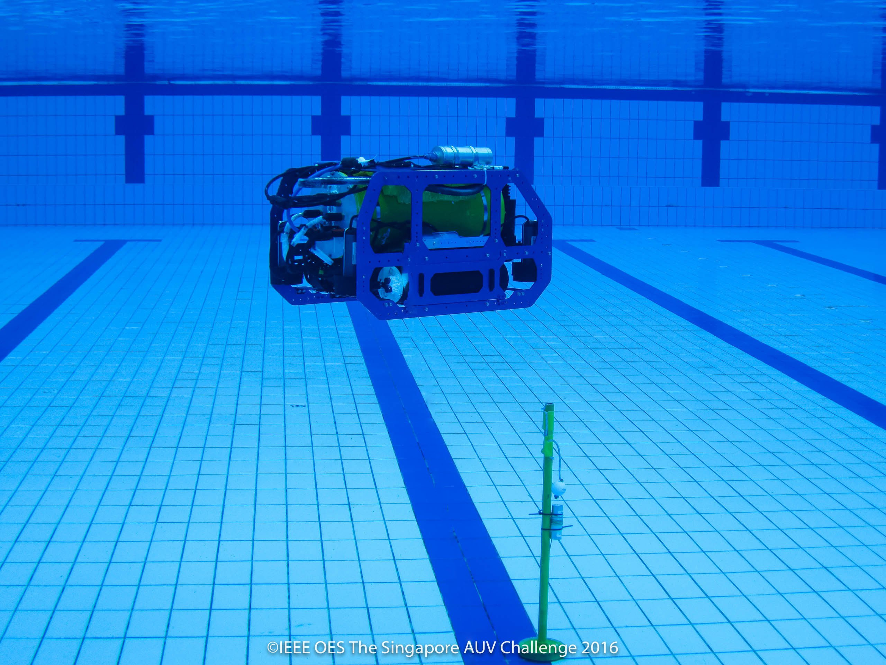

SAUVC 2018 Rulebook
Table of Contents
- Objective
- Structure of the Team
- Video Submission
- Qualification
- The Arena
- Tasks
- Specification of AUV
- Game Procedure
- Technical Presentation
- Certificate of Participation
- General Restrictions
- Disqualification
- Others
Objective
The goal is for each team to design and build an Autonomous Underwater Vehicle (AUV) which can negotiate the tasks put forth under a prescribed time. Also to learn and have fun in the process.

Structure of the Team
A team may consist of up to 8 participants and up to 3 faculty co-supervisors. At least half of the participants must be students at the time of registration.

Video Submission
All teams are to submit a video of their AUV prior to the competition. The video has to
- be maximum 5 minutes long,
- be submitted at least 1 week prior to the competition,
- showcase the AUV swimming underwater for at least 10 seconds.
Videos will be reviewed by the organizing committee and accepted videos will count towards the Certificate of Participation.
Qualification
- AUVs have to pass a qualifying round before they can participate in the main arena.
- To qualify, an AUV has to swim between two markers separated by 10 meters and without surfacing or touching the bottom/wall.
- The time taken to pass the qualifier round decides the sequence in which the teams will participate in the final round of the competition. The team that finished the last in the qualifying round would participate first in the final round.

The Arena
The challenge will be held in an olympic sized swimming pool (50m x 25m).


Starting Zone
The starting zone is a 140×140cm area marked on the surface of water. The teams must start their AUVs from this area. The team may only place the AUV at the water surface, it must autonomously submerge before leaving the starting zone.

Tasks
There are 4 tasks in the challenge:
The first task, Navigation, is mandatory and must be completed before attempting any other task. The other tasks can be attempted in any order. Surfacing at any point signifies end of attempt.
1. Navigation
The aim of the this task is to swim through a gate in water. The gate is approximately 800 cm away from the starting point. The AUV has to swim through the 150 cm high gate.
Points.
If the AUV successfully passes through the gate,10 Points will be awarded.
Specification of props.
| Prop | Description | |
|---|---|---|
| 1 | Gate | 150cm wide and 150cm high gate with red and green markings on port and starboard sides respectively. |

2. Target Acquisition
The aim of the task is to detect and acquire a target among a series of drums at the bottom of the pool, in the target zone.
A target zone is defined by a green colored mat laid out on the floor of the pool. The mat is 8m x 2m in size. Figure 3. shows the location of the mat with respect to the arena.
There are 4 colored drums in the arena. All of them are on the mat. One of the drums, chosen at random, will be blue in color. One of the red drums, chosen at random, will contain an acoustic pinger. The AUV needs to drop a ball in one of the drums to successfully complete this task. In the event of multiple balls being dropped, only the first ball is taken to consideration.
The location of the red drum which contains the acoustic pinger may be randomized between attempts, as may be the order of the drums.
Points.
Points will be awarded as follows.
- Drop the ball in the blue drum: 30 Points
- Drop the ball in the red drum with the pinger: 50 Points
- Dropping the ball in any other red drum: 10 Points
Specification of props.
| Prop | Description | |
|---|---|---|
| 1 | Drum | 60cm in diameter and 30cm in depth. |
| 2 | Ball | 3.5-4.5cm in diameter and weigh no more than 100g in air. Provided by teams. |
| 3 | Drum Pinger | RJE International Pinger Model No. ULB-362B/45 kHz. |

3. Target Reacquisition
The aim of this task is to reacquire a previously detected target.
This task is only attemptable if the Target Acquisition has been successfully completed. Furthermore, the AUV has to leave the target zone, before it can attempt the Target Reacquisition task. Every part of the AUV needs to clear the target zone, before it can be considered outside the target zone.
After the AUV is outside the target zone, it needs to reacquire the target and pick up the ball that it dropped in the Target Acquisition task. The AUV has to hold on to the ball till the end of attempt to successfully complete this task.
This task does not have to be attempted immediately after Target Acquisition task, other tasks may be attempted in between.
Points.
If the AUV successfully picks up the ball and holds on to it till the end of the attempt, 60 Points will be awarded.
Specification of props.
| Prop | Description | |
|---|---|---|
| 1 | Target zone | Green mat 8m x 2m in size. |
| 2 | Ball | Same ball used in target acquisition task. Provided by the teams. |
4. Localization
The aim of the this task is to localize on a flare. The flare is marked with an acoustic pinger. This flare could be located anywhere within the main arena. The AUV should locate and bump the flare causing the golf ball on the flare to drop out. The flare will be yellow in color.
Points.
If the AUV successfully causes the ball to drop from the flare, 40 Points will be awarded.
Specification of props.
| Prop | Description | |
|---|---|---|
| 1 | Flare | 150cm high and yellow in color. |
| 2 | Flare Pinger | RJE International Pinger Model No. ULB-362B/37.5 kHz. |



Surfacing
Breaching the surface any point during the mission causes end of the current attempt. The team may wish to retry if they still have time left.
When the AUV surfaces, and the current attempt comes to an end, the total points for that attempt will be computed based on the tasks accomplished and the timing bonus and a 5 Points bonus for ending.
Aborting
At any time during the mission, current attempt can be aborted, by indicating to the Game Master. The divers would then retreive the AUV back to the starting zone. The timing for the current attempt is stopped at the time of indication. The team may wish to retry if they still have time left.
In the case of an aborted attempt, the team would be awarded the points for all previously successfully completed tasks during the current attempt.
Automatic Abort
If the AUV touches the bottom or the side walls of the pool for a cumulative time of more than 10 seconds, the current attempt would be automatically aborted. The divers would then retreive the AUV back to the starting zone. The team may wish to retry if they still have time left.
In the case of an automatic aborted attempt, the team would be awarded the points for all previously successfully completed tasks during the attempt.
Timing Bonus
At the end of an attempt, as long as the AUV has successfully completed 2 tasks, the Navigation task and any other task, bonus points proportional to the remaining time will be awarded in accordance with the following formula.
Bonus points = (900 - RUN_TIME) • 0.03
For eg. For a run time of 420s, Bonus = (900-420)•0.03 = 14.4 Points
Penalties
There are penalty points for touching the floor or wall of the pool at any time, and also for touching the gate. This penalty points are:
| Description | Penalty Points | |
|---|---|---|
| 1 | Touching the gate | 2 |
| 2 | Touching the bottom of the pool or wall | 5 |
Specification of AUV
Size
- The AUV must fit within a 140 × 100 × 100 cm box.
- An AUV with dimension of less than 70 cm × 50 cm × 50 cm will be given bonus 10 points.
- The AUV must not weigh more than 50 kg in air.
- An AUV weighing less than 40 kg in air will be given bonus 10 points.
Power
- Power should be self contained. Tethers of any sort are not allowed.
- The voltage of the power source used by each AUV should not exceed 24VDC.
Safety
- AUVs should not leak and pollute the pool.
- AUVs must be designed and manufactured as to pose no danger of any kind to anyone or anything at the venue.
- AUVs must have a kill switch that turns off the vehicle, which is easily accessible to a diver. This should be marked bright yellow.
- Pressure of any compressed gas used must not exceed 6 bars. AUV should be completely autonomous.
- The use of explosives, fire or hazardous chemicals is prohibited. Certified lithium batteries are allowed
- If lasers are used, they must be of class 2 or lower. Care must be taken to protect all persons at the venue from harm. Beams must be oriented in such a fashion that they cannot shine into the eyes of the spectators.

Communications
- No communication from/to the AUV of any sort is allowed during the game
Game Procedure
Sequence of events during the competition
- AUVs will undergo weight and size check. Bonus points, if applicable, will be awarded.
- AUVs will be tested for battery, oil or lubricant leak. Failing the leak test would lead to disqualification of team.
- AUVs will proceed to qualifying round. The bonus points for size and weight is applicable only if the AUV passes the qualifying round.
- The qualified AUVs will proceed for the final rounds of competition.
Practice Rounds
- Teams will be allowed to practice in the main arena after qualifications, subject to availability of time slots and the schedule during the competition.
- No tethers are allowed at ANY time inside the main arena.
- Team will be allowed calibrate their AUV sensors with tethers, at the edge of the pool, with the vehicle held stationary.
Length of a game
- Each team is given 15 minutes to complete the tasks.
- In any of the following cases, the game ends immediately.
- Disqualification is announced in the game.
- When the judges determine that the game cannot continue.
- Setting up of AUV
- Five minutes is given for setting up the AUV before the game starts.
- No more than two members of respective teams can engage in setting up of their AUV at the poolside.
- The two designated members setting up must wear life jackets. Failure to do so may result in disqualification.
- Any team that fails to complete setting their AUV within five minutes can resume the setting up again once the game starts.
- Setting up during the game uses the allocated time for the tasks and game.
- The AUV can only start from the start zone. This is the only place where the AUV is allowed to be on the water surface.
- The AUV should start its maneuver only after it has completely submerged in the water.
Retries
- A retry attempt can be made only after the judges' permission.
- The AUV will be passed to the two designated team members standing beside the pool by the divers.
- A retry would mean that the AUV starts from the start zone with zero points.
- A maximum of 15 minutes is allowed including all the retries.
- The attempt with the highest score (including retries) will be considered for final scoring.
Technical Presentation
- Teams have to make a 10 minutes presentation about their AUVs and their design and engineering process on the "seminar day" of the competition.
- The date and venue of the presentation will be confirmed 1 week before the competition.
- The presentation will be judged and a maximum of 15 points can be earned towards the competition.
- There will be a 5 minutes Q&A session after the presentation.
Presentation Rubrics
The presentation will be judged on the following rubrics 3 points each).
- Timeliness (<= 10min)
- Technical Overview (for eg. Mechanical & Electronics & Software architecture of the AUV.)
- Design Innovation (for eg. Novel ideas/techniques you implemented in your AUV.)
- Challenges (for eg. Major challenges and how you overcame them.)
- What did we learn (for eg. Lessons learnt from the competition.)
Certificate of Participation
- Teams whose AUVs successfully complete the qualifier round will receive Certificate of Participation.
- Teams whose video submissions have been accepted & participate in the competition will receive a Certificate of Participation.
- Failing the above two criteria, no Certificate of Participation will be awarded.
General Restrictions
- Team members are not allowed inside the swimming pool at any point during the game.
- Team members may not disturb the water surface once the game starts.
- Members of other teams are not allowed in the game area.
- Nobody is allowed to wear any footwear near the pool area.
- The judges may suspend the challenge if weather turns unfavorable.
- The pool area must be evacuated in case of lightning.
Disqualification
- Oil or lubrication leak causing the pollution of pool.
- Battery leak causing the pollution of pool.
- The team damages or tries to damage the field, facilities or equipments.
- The team performs any acts that are not in the spirit of fair play.
- The team fails to obey instructions or warnings issued by the referees.
- The team has made a false start for three times in the same match.
- If the team does not abide by the the general restrictions.
Others
- The legitimacy of any actions not provided in this rulebook will be subject to discretion of the judges.
- The dimensions, weights, etc. of the field, facilities and equipments stated in this rulebook have a margin of error of ±5% unless otherwise stated. However the dimensions and weights of the AUVs as stated in the rule book are the maximum and cannot be deviated.
- The judges may demand additional explanations on safety issues when the safety of a vehicle is deemed to be in question.